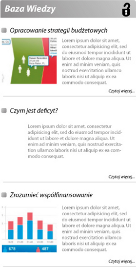
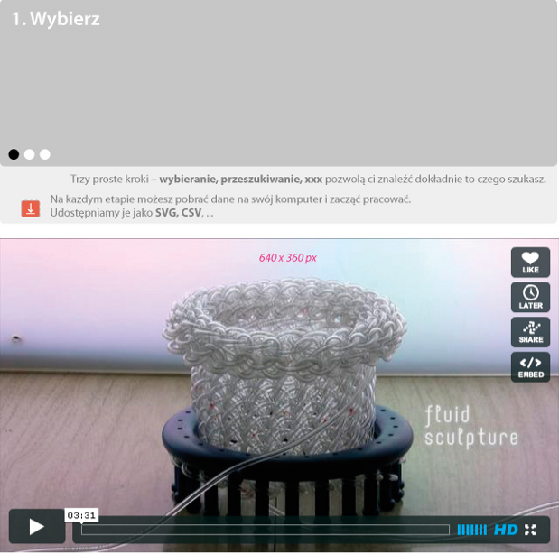

- 21.02.2011, 17:34
- 23.02.2011, 09:52
- 23.02.2011, 22:43
Dostępne kolekcje
Budżet centralny
To jest kolekcja budżetu centralnego, który stanowi
zaledwie jedną trzecią finansów pulicznych.
Fundusze celowe
To jest kolekcja budżetu centralnego, który stanowi
zaledwie jedną trzecią finansów pulicznych.
Wybory lokalne
To jest kolekcja budżetu centralnego, który stanowi
zaledwie jedną trzecią finansów pulicznych.
kolejne niebawem
Kolekcja danych będzie się powiększała.
Jak z nich skorzystać?


